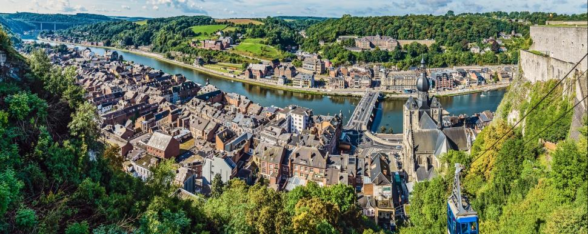
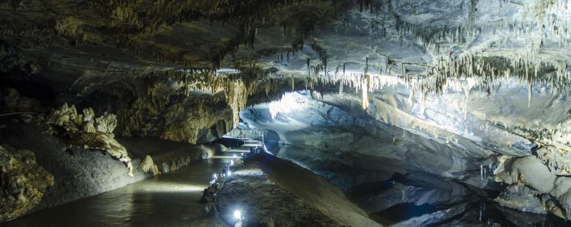
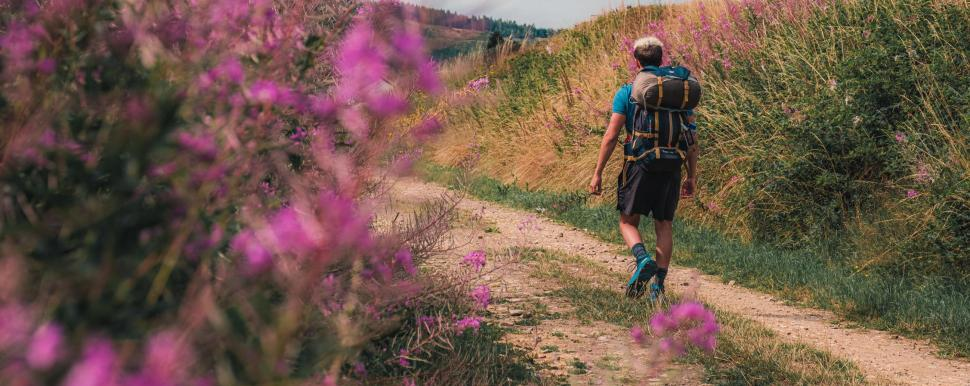
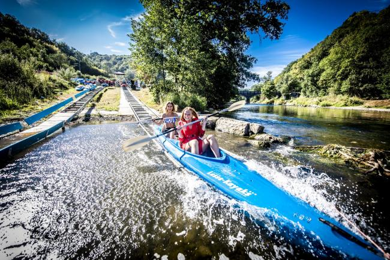

Ardennen · Het beste
De plekken waarvoor je komt en de dingen die je er doet: hoogtepunten, activiteiten en de top-10's van de streek — op één plek verzameld.
Hoogtepunten


Een ondergronds netwerk, uitgesleten door de Lesse — met een dierenpark erbovenop.
Ook La Roche-en-Ardenne, Bouillon en de Watervallen van Coo krijgen in het voorstel hetzelfde plaatstemplate — zie de volledige lijst op de huidige site.
Activiteiten & top-10's




Weekendje weg · Bijzonder overnachten · Fietsknooppunten · Kerstmarkten — vier toegangspoorten op vragen die reizigers vandaag al stellen.